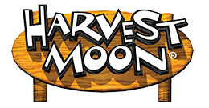
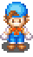Home
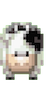Games
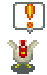Influences
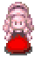Rankings
Personal Rankings
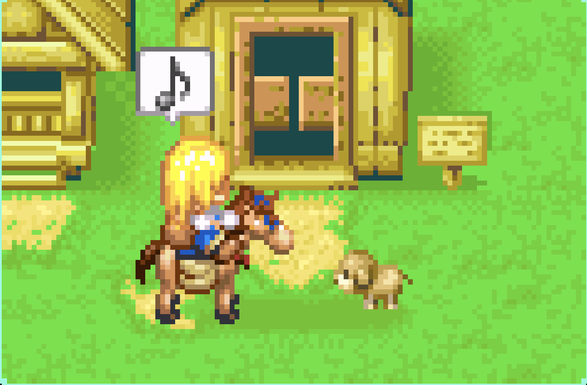
These rankings are based on games I've played before.
10. Harvest Moon: Skytree Village
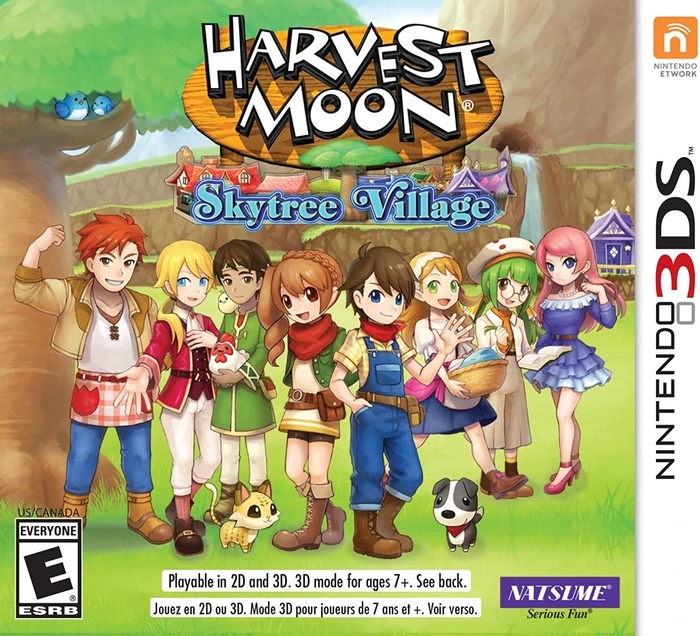
9. Harvest Moon: Light of Hope
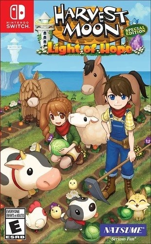
8. Harvest Moon: The Lost Valley
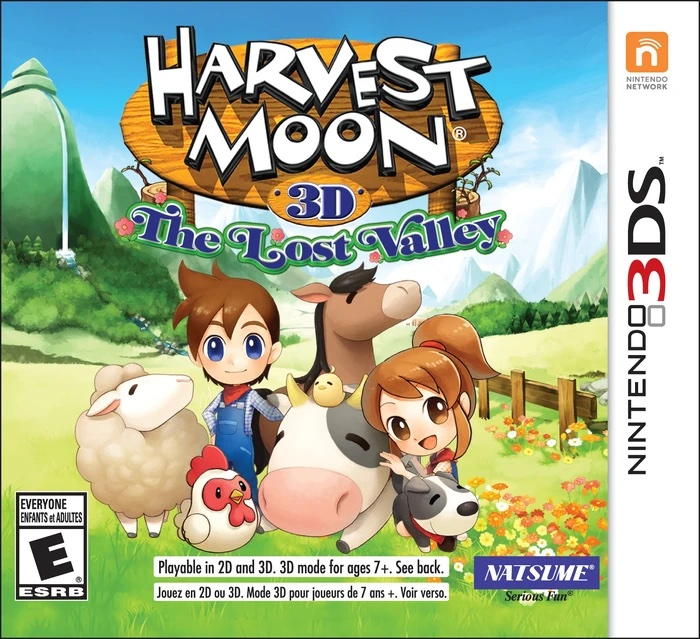
7. Harvest Moon: Animal Parade
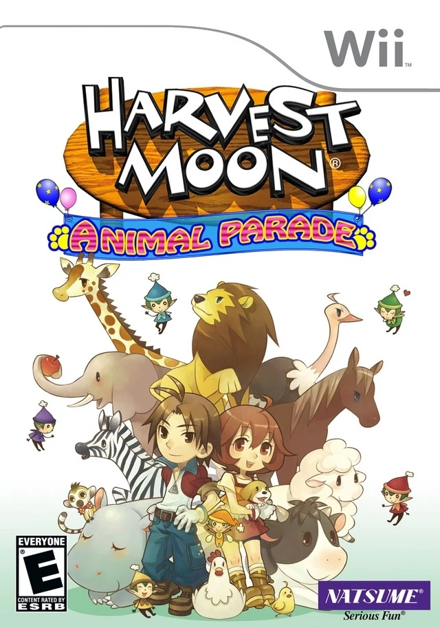
6. Harvest Moon: Friends of Mineral Town
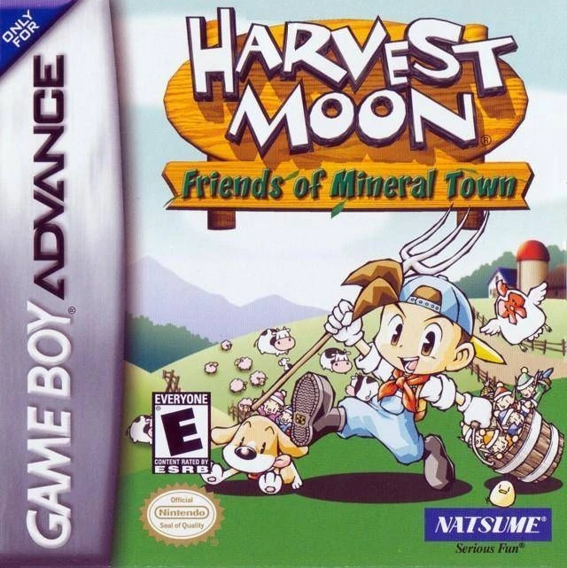
5. Harvest Moon: More Friends of Mineral Town
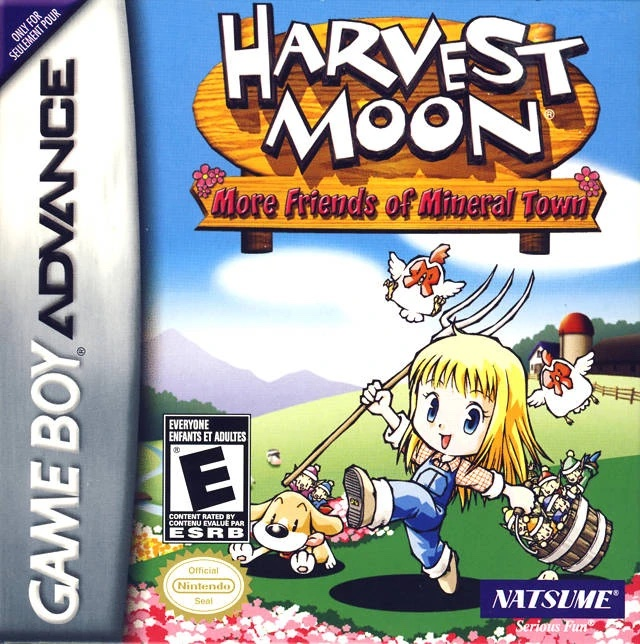
4. Harvest Moon: Tale of Two Towns
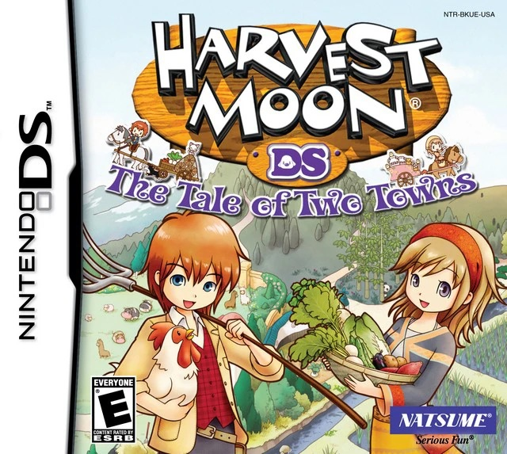
3. Harvest Moon: Trio of Towns
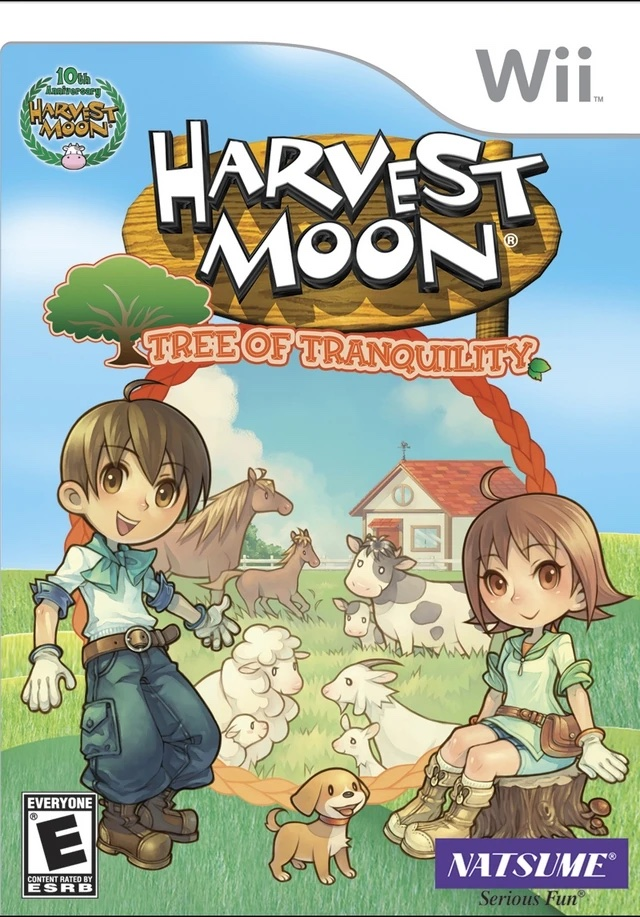
2. Harvest Moon: A New Beginning
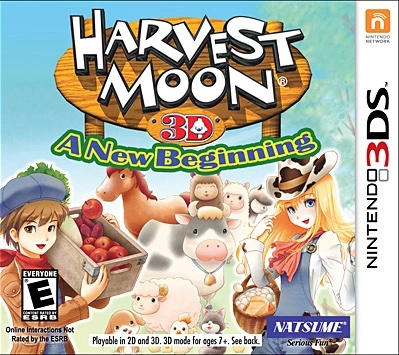
1. Rune Factory 4
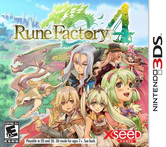